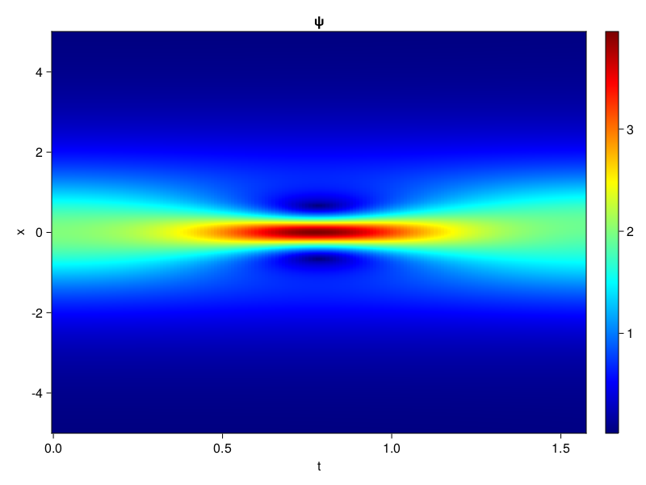
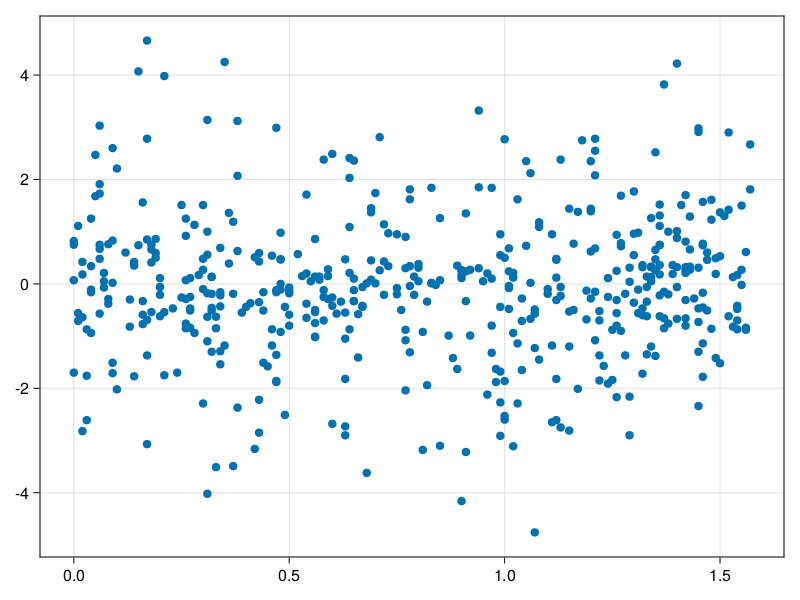

Schrödinger equation
The nonlinear Shrödinger equation is given by
\[\mathrm{i} \partial_t \psi=-\frac{1}{2} \sigma \partial_{x x} \psi-\beta|\psi|^2 \psi\]
Let $\sigma=\beta=1, \psi=u+v i$, the equation can be transformed into a system of partial differential equations
using ModelingToolkit, IntervalSets, Sophon, CairoMakie
using Optimization, OptimizationOptimJL
@parameters x,t
@variables u(..), v(..)
Dₜ = Differential(t)
Dₓ² = Differential(x)^2
eqs=[Dₜ(u(x,t)) ~ -Dₓ²(v(x,t))/2 - (abs2(v(x,t)) + abs2(u(x,t))) * v(x,t),
Dₜ(v(x,t)) ~ Dₓ²(u(x,t))/2 + (abs2(v(x,t)) + abs2(u(x,t))) * u(x,t)]
bcs = [u(x, 0.0) ~ 2sech(x),
v(x, 0.0) ~ 0.0,
u(-5.0, t) ~ u(5.0, t),
v(-5.0, t) ~ v(5.0, t)]
domains = [x ∈ Interval(-5.0, 5.0),
t ∈ Interval(0.0, π/2)]
@named pde_system = PDESystem(eqs, bcs, domains, [x,t], [u(x,t),v(x,t)])\[ \begin{align} \frac{\mathrm{d}}{\mathrm{d}t} u\left( x, t \right) =& - \frac{1}{2} \frac{\mathrm{d}}{\mathrm{d}x} \frac{\mathrm{d}}{\mathrm{d}x} v\left( x, t \right) - \left( \left|u\left( x, t \right)\right|^{2} + \left|v\left( x, t \right)\right|^{2} \right) v\left( x, t \right) \\ \frac{\mathrm{d}}{\mathrm{d}t} v\left( x, t \right) =& \frac{1}{2} \frac{\mathrm{d}}{\mathrm{d}x} \frac{\mathrm{d}}{\mathrm{d}x} u\left( x, t \right) + \left( \left|u\left( x, t \right)\right|^{2} + \left|v\left( x, t \right)\right|^{2} \right) u\left( x, t \right) \end{align} \]
pinn = PINN(u = Siren(2,1; hidden_dims=16,num_layers=4, omega = 1.0),
v = Siren(2,1; hidden_dims=16,num_layers=4, omega = 1.0))
sampler = QuasiRandomSampler(500, (200,200,20,20))
strategy = NonAdaptiveTraining(1,(10,10,1,1))
prob = Sophon.discretize(pde_system, pinn, sampler, strategy)OptimizationProblem. In-place: true
u0: ComponentVector{Float64}(u = (layer_1 = (weight = [0.2781956195831299 -0.3221631646156311; 0.23968255519866943 0.11544430255889893; … ; -0.3551657199859619 0.45024263858795166; -0.15794390439987183 -0.4972788095474243], bias = [0.0; 0.0; … ; 0.0; 0.0;;]), layer_2 = (weight = [-0.39560559391975403 -0.5420940518379211 … 0.06601762026548386 0.10697906464338303; 0.10750926285982132 0.321463018655777 … -0.1518498957157135 -0.04673716798424721; … ; -0.35522741079330444 -0.35124853253364563 … -0.4676174819469452 0.07658049464225769; 0.02723720856010914 -0.2850644588470459 … -0.4806424379348755 -0.35347458720207214], bias = [0.0; 0.0; … ; 0.0; 0.0;;]), layer_3 = (weight = [-0.10892394185066223 0.2436235547065735 … -0.06647467613220215 -0.45273327827453613; -0.13052070140838623 -0.11216946691274643 … 0.43556180596351624 0.607063889503479; … ; 0.4102678596973419 -0.23983795940876007 … 0.5860594511032104 0.196150541305542; 0.37304309010505676 -0.2938128411769867 … 0.5397157073020935 -0.5919505953788757], bias = [0.0; 0.0; … ; 0.0; 0.0;;]), layer_4 = (weight = [-0.27713456749916077 -0.2747345268726349 … -0.04491303488612175 0.24506522715091705; 0.1345939040184021 0.18866579234600067 … 0.5586565136909485 -0.6045189499855042; … ; 0.2119632363319397 -0.03576651215553284 … 0.11270244419574738 -0.6108105778694153; -0.5345080494880676 -0.010308251716196537 … -0.2303282618522644 0.01860884390771389], bias = [0.0; 0.0; … ; 0.0; 0.0;;]), layer_5 = (weight = [-0.3128955364227295 0.016992028802633286 … 0.5281621813774109 -0.12406861782073975], bias = [0.0;;])), v = (layer_1 = (weight = [-0.3745683431625366 -0.3909677267074585; -0.29720258712768555 -0.4297742247581482; … ; 0.24641740322113037 0.3852916359901428; -0.10545003414154053 0.14055657386779785], bias = [0.0; 0.0; … ; 0.0; 0.0;;]), layer_2 = (weight = [-0.3865422010421753 0.03656221553683281 … 0.43964362144470215 0.314199835062027; -0.12393604964017868 0.47483739256858826 … 0.178097665309906 -0.5831652283668518; … ; -0.5353081822395325 0.35022789239883423 … -0.4703632593154907 0.31434890627861023; -0.5915146470069885 0.009866306558251381 … 0.25435930490493774 0.29233625531196594], bias = [0.0; 0.0; … ; 0.0; 0.0;;]), layer_3 = (weight = [-0.21532586216926575 -0.08115091174840927 … -0.22087083756923676 0.21089787781238556; 0.5373758673667908 0.15422971546649933 … -0.5237492322921753 -0.495068222284317; … ; 0.5512858629226685 0.24767397344112396 … -0.1127859577536583 0.6016073226928711; -0.43105870485305786 0.5178554058074951 … 0.5275892615318298 0.2728346288204193], bias = [0.0; 0.0; … ; 0.0; 0.0;;]), layer_4 = (weight = [0.08548253774642944 -0.32394853234291077 … 0.24224399030208588 -0.47240981459617615; -0.3908059597015381 0.5391024947166443 … -0.08791191875934601 -0.05873757228255272; … ; -0.20250311493873596 -0.05314150080084801 … -0.294055700302124 -0.21131010353565216; 0.2707497179508209 0.19726283848285675 … -0.17514705657958984 -0.10733165591955185], bias = [0.0; 0.0; … ; 0.0; 0.0;;]), layer_5 = (weight = [-0.2341369241476059 0.18845774233341217 … -0.5248503684997559 0.04417010769248009], bias = [0.0;;])))Now we train the neural nets and resample data while training.
function train(pde_system, prob, sampler, strategy, resample_period = 500, n=10)
bfgs = BFGS()
res = Optimization.solve(prob, bfgs; maxiters=2000)
for i in 1:n
data = Sophon.sample(pde_system, sampler)
prob = remake(prob; u0=res.u, p=data)
res = Optimization.solve(prob, bfgs; maxiters=resample_period)
end
return res
end
res = train(pde_system, prob, sampler, strategy)u: ComponentVector{Float64}(u = (layer_1 = (weight = [0.6277434741554897 -0.2684413264240532; 0.6050086554485544 -0.42970262366414214; … ; -0.12383556218745102 0.5205790814725393; -0.7029665181199763 -0.9779987680297869], bias = [0.04137989367274654; 0.22110900854198434; … ; -0.24575544870927546; -0.14586334467352785;;]), layer_2 = (weight = [-0.505874341002017 -0.6698183102877929 … 0.20079213444724306 0.1950811091034188; 0.27095279701081226 0.3634127151653681 … -0.2999069446842931 -0.10991210469159317; … ; -0.24068723113887658 -0.4584888394351746 … -0.390989214602908 -0.17095342602734304; 0.02580199874112046 -0.03888748748780367 … -0.15450802927847318 -0.08313330010098642], bias = [-0.3543175808813304; 0.1746877119459336; … ; -0.10753720696305522; 0.4409883663593473;;]), layer_3 = (weight = [-0.26182977710960825 -0.21593986904517387 … 0.03571732361222638 -0.2705033559881324; 0.30806055910533664 -0.7706672783659969 … -0.01749298390367687 0.5762781930748196; … ; 0.5925092599059792 -0.25770312587277794 … 0.4724332998401458 0.09978426172579154; 0.29638121791895766 -0.4042526370860091 … 0.7275229848667364 -0.6048053161262547], bias = [-0.22497718396277414; 0.32481719134470044; … ; -0.1582639974736364; -0.3991385516268757;;]), layer_4 = (weight = [-0.21675482746526975 -0.16266524531190266 … -0.25495584657289977 -0.13401308964859643; 0.10290549575021767 0.11235274371466972 … 0.3435375387974316 -0.551198321064779; … ; 0.0031510654668658275 -0.03629681275634824 … 0.2857709271126923 -0.6056639432497093; -0.5961851481287544 0.3041102028164497 … -0.992386378193225 -0.04795827108119204], bias = [-0.034633830284323874; -0.009623776035115423; … ; 0.21442341580908647; -0.03323877037181644;;]), layer_5 = (weight = [-0.8101815851295482 0.15123155504370184 … 1.1159358617304274 -0.3983389959940655], bias = [-0.4493117582692189;;])), v = (layer_1 = (weight = [-0.5158200060921365 -0.3245459446774368; -1.0654106123928704 -0.3169721559850894; … ; 0.19576230349361445 0.4969199615055283; -0.3310149028877114 -0.12425358250229018], bias = [0.08001095368398793; 0.2087193737706999; … ; -0.3078163850357389; -0.014569772236666745;;]), layer_2 = (weight = [-0.6861662988021221 -0.4736607463135033 … 0.7128138036051831 0.06171344387045512; 0.03133481118580947 0.4569807897557592 … 0.043411751833634424 -0.3065738868347425; … ; -0.3522913857640326 0.26431168809567746 … -0.5355974823455725 0.14949244990839905; -0.3607449197620629 0.22107583538572176 … 0.2259029744728128 0.28350724647618536], bias = [-0.039670312001488066; 0.2966646825498145; … ; 0.26630897089681144; 0.3434515060534743;;]), layer_3 = (weight = [-0.018164101942649103 -0.2950627310238507 … 0.013717151806633137 0.27367377001787985; 0.17333812911388247 -0.08499177942123241 … -0.4438241735515165 -0.4165807719827335; … ; 0.12423212048170294 0.3706010035162996 … -0.06706874750157979 0.639985176243812; -1.1797673073020531 0.8969333260644917 … 0.5282059033902278 0.0381095018867412], bias = [-0.17065024696196684; 0.057411046946724435; … ; 0.24327029492873417; -0.12863846575276386;;]), layer_4 = (weight = [0.08095668931492157 -0.4746422818060982 … -0.20766905153953102 -0.49342802151403464; -0.36011112510464144 0.3593772014187239 … 0.009453942993798564 -0.416232608710234; … ; -0.29828906545191236 -0.4794439481549665 … -0.8290333070546652 0.34889157305853213; 0.16576231625159468 0.03412107279817233 … 0.1712059883852732 -0.12563672641048626], bias = [-0.5931159843822819; -0.2713802827139772; … ; -0.11198386008125272; -0.22126037154628986;;]), layer_5 = (weight = [1.240875616842204 -0.14791989379034962 … -0.3315099956472928 0.7146057210460065], bias = [-0.06071704942625089;;])))phi = pinn.phi
ps = res.u
xs, ts= [infimum(d.domain):0.01:supremum(d.domain) for d in pde_system.domain]
u = [sum(phi.u(([x,t]), ps.u)) for x in xs, t in ts]
v = [sum(phi.v(([x,t]), ps.v)) for x in xs, t in ts]
ψ = @. sqrt(u^2+ v^2)
axis = (xlabel="t", ylabel="x", title="u")
fig, ax1, hm1 = heatmap(ts, xs, u', axis=axis)
ax2, hm2= heatmap(fig[1, end+1], ts, xs, v', axis= merge(axis, (; title="v")))
display(fig)
axis = (xlabel="t", ylabel="x", title="ψ")
fig, ax1, hm1 = heatmap(ts, xs, ψ', axis=axis, colormap=:jet)
Colorbar(fig[:, end+1], hm1)
display(fig)
Customize Sampling
Bascially any sampling method is supportted. For example we can sample data according to the predicted solution.
using StatsBase
data = vec([[x, t] for x in xs, t in ts])
wv = vec(ψ)
new_data = wsample(data, wv, 500)
new_data = reduce(hcat, new_data)
fig, ax = scatter(new_data[2,:], new_data[1,:])
prob.p[1] = new_data
prob.p[2] = new_data
prob = remake(prob; u0 = res.u)
# res = Optimization.solve(prob, bfgs; maxiters=1000)OptimizationProblem. In-place: true
u0: ComponentVector{Float64}(u = (layer_1 = (weight = [0.6277434741554897 -0.2684413264240532; 0.6050086554485544 -0.42970262366414214; … ; -0.12383556218745102 0.5205790814725393; -0.7029665181199763 -0.9779987680297869], bias = [0.04137989367274654; 0.22110900854198434; … ; -0.24575544870927546; -0.14586334467352785;;]), layer_2 = (weight = [-0.505874341002017 -0.6698183102877929 … 0.20079213444724306 0.1950811091034188; 0.27095279701081226 0.3634127151653681 … -0.2999069446842931 -0.10991210469159317; … ; -0.24068723113887658 -0.4584888394351746 … -0.390989214602908 -0.17095342602734304; 0.02580199874112046 -0.03888748748780367 … -0.15450802927847318 -0.08313330010098642], bias = [-0.3543175808813304; 0.1746877119459336; … ; -0.10753720696305522; 0.4409883663593473;;]), layer_3 = (weight = [-0.26182977710960825 -0.21593986904517387 … 0.03571732361222638 -0.2705033559881324; 0.30806055910533664 -0.7706672783659969 … -0.01749298390367687 0.5762781930748196; … ; 0.5925092599059792 -0.25770312587277794 … 0.4724332998401458 0.09978426172579154; 0.29638121791895766 -0.4042526370860091 … 0.7275229848667364 -0.6048053161262547], bias = [-0.22497718396277414; 0.32481719134470044; … ; -0.1582639974736364; -0.3991385516268757;;]), layer_4 = (weight = [-0.21675482746526975 -0.16266524531190266 … -0.25495584657289977 -0.13401308964859643; 0.10290549575021767 0.11235274371466972 … 0.3435375387974316 -0.551198321064779; … ; 0.0031510654668658275 -0.03629681275634824 … 0.2857709271126923 -0.6056639432497093; -0.5961851481287544 0.3041102028164497 … -0.992386378193225 -0.04795827108119204], bias = [-0.034633830284323874; -0.009623776035115423; … ; 0.21442341580908647; -0.03323877037181644;;]), layer_5 = (weight = [-0.8101815851295482 0.15123155504370184 … 1.1159358617304274 -0.3983389959940655], bias = [-0.4493117582692189;;])), v = (layer_1 = (weight = [-0.5158200060921365 -0.3245459446774368; -1.0654106123928704 -0.3169721559850894; … ; 0.19576230349361445 0.4969199615055283; -0.3310149028877114 -0.12425358250229018], bias = [0.08001095368398793; 0.2087193737706999; … ; -0.3078163850357389; -0.014569772236666745;;]), layer_2 = (weight = [-0.6861662988021221 -0.4736607463135033 … 0.7128138036051831 0.06171344387045512; 0.03133481118580947 0.4569807897557592 … 0.043411751833634424 -0.3065738868347425; … ; -0.3522913857640326 0.26431168809567746 … -0.5355974823455725 0.14949244990839905; -0.3607449197620629 0.22107583538572176 … 0.2259029744728128 0.28350724647618536], bias = [-0.039670312001488066; 0.2966646825498145; … ; 0.26630897089681144; 0.3434515060534743;;]), layer_3 = (weight = [-0.018164101942649103 -0.2950627310238507 … 0.013717151806633137 0.27367377001787985; 0.17333812911388247 -0.08499177942123241 … -0.4438241735515165 -0.4165807719827335; … ; 0.12423212048170294 0.3706010035162996 … -0.06706874750157979 0.639985176243812; -1.1797673073020531 0.8969333260644917 … 0.5282059033902278 0.0381095018867412], bias = [-0.17065024696196684; 0.057411046946724435; … ; 0.24327029492873417; -0.12863846575276386;;]), layer_4 = (weight = [0.08095668931492157 -0.4746422818060982 … -0.20766905153953102 -0.49342802151403464; -0.36011112510464144 0.3593772014187239 … 0.009453942993798564 -0.416232608710234; … ; -0.29828906545191236 -0.4794439481549665 … -0.8290333070546652 0.34889157305853213; 0.16576231625159468 0.03412107279817233 … 0.1712059883852732 -0.12563672641048626], bias = [-0.5931159843822819; -0.2713802827139772; … ; -0.11198386008125272; -0.22126037154628986;;]), layer_5 = (weight = [1.240875616842204 -0.14791989379034962 … -0.3315099956472928 0.7146057210460065], bias = [-0.06071704942625089;;])))